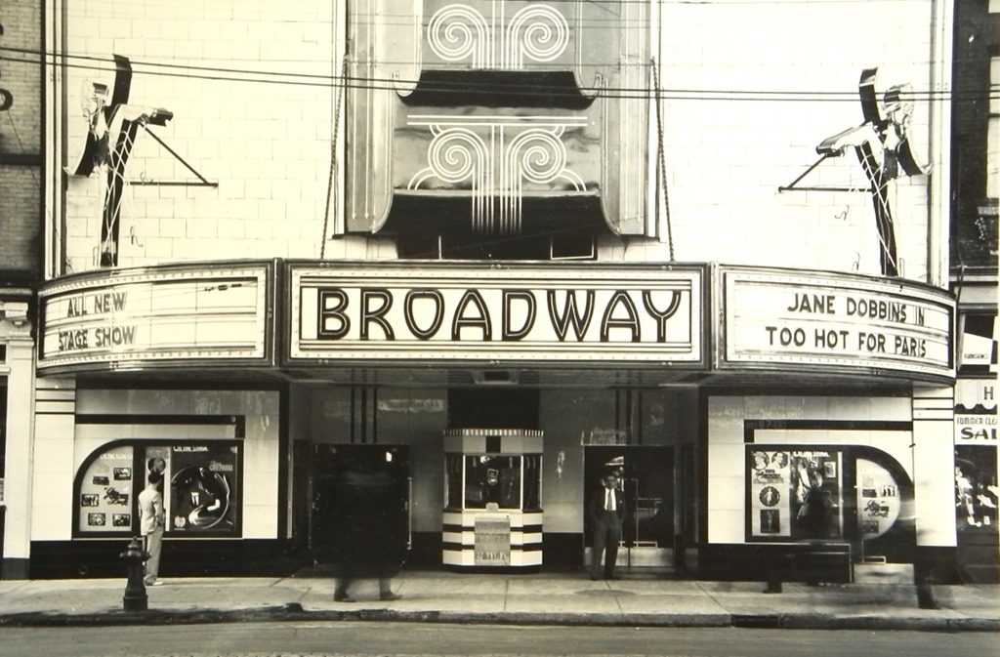

New York did not have a significant theatre presence until about 1750, when actor-managers Walter Murray and Thomas Kean established a resident theatre company at the Theatre on Nassau Street, which held about 280 people. They presented Shakespeare plays and ballad operas such as The Beggar's Opera. Once this began, many other shows and theaters began to pop-up. Theatre in New York moved from downtown gradually to midtown beginning around 1850, seeking less expensive real estate. In the beginning of the 19th century, the area that now comprises the Theater District was owned by a handful of families and comprised a few farms. Broadway's first "long-run" musical was a 50-performance hit called The Elves in 1857. In 1870, the heart of Broadway was in Union Square, and by the end of the century, many theatres were near Madison Square. Theatres did not arrive in the Times Square area until the early 1900s, and the Broadway theatres did not consolidate there until a large number of theatres were built around the square in the 1920s and 1930s
